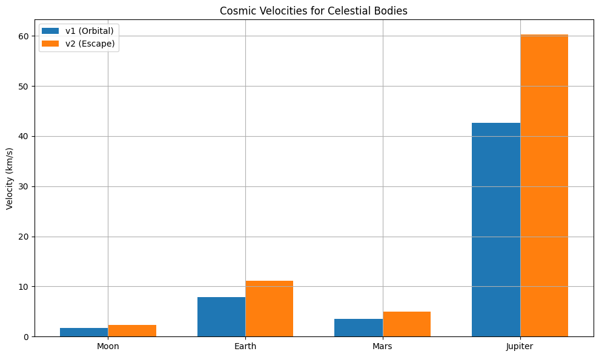

Problem 2
Escape and Cosmic Velocities
Introduction
Cosmic velocities define the speed thresholds required to:
- Stay in orbit – First Cosmic Velocity
- Escape the planet's gravity – Second Cosmic Velocity
- Escape the solar system – Third Cosmic Velocity
These principles are fundamental in spaceflight mechanics and interplanetary mission planning.
1. Derivation of Cosmic Velocities
🛰 First Cosmic Velocity (\(v_1\))
The first cosmic velocity is the minimum speed needed to orbit a celestial body near its surface in a circular orbit.
From Newton’s gravitational force and centripetal force balance:
\[
\frac{G M m}{R^2} = \frac{m v_1^2}{R}
\]
Simplifying:
\[
v_1 = \sqrt{\frac{G M}{R}}
\]
Second Cosmic Velocity (\(v_2\))
This is the escape velocity, i.e., the velocity needed to completely escape the gravitational field of a planet.
From conservation of energy:
\[
\frac{1}{2} m v_2^2 = \frac{G M m}{R}
\]
Therefore:
\[
v_2 = \sqrt{\frac{2 G M}{R}} = \sqrt{2} \cdot v_1
\]
Third Cosmic Velocity (\(v_3\))
This is the minimum speed required to escape the Sun's gravitational pull from Earth’s orbit.
Using Pythagoras-like relation:
\[
v_3 = \sqrt{v_{\text{esc, Earth}}^2 + v_{\text{orbit around Sun}}^2}
\]
Where: - \(v_{\text{esc, Earth}} \approx 11.2 \, \text{km/s}\) - \(v_{\text{orbit around Sun}} \approx 29.78 \, \text{km/s}\)
Then:
\[
v_3 \approx \sqrt{(11.2)^2 + (29.78)^2} \approx 42.1 \, \text{km/s}
\]
2. Earth Cosmic Velocity Values
| Velocity Type | Formula | Value (Earth) |
|---|---|---|
| First Cosmic Velocity | \(v_1 = \sqrt{\frac{G M}{R}}\) | \(\approx 7.91\) km/s |
| Second Cosmic Velocity | \(v_2 = \sqrt{\frac{2 G M}{R}}\) | \(\approx 11.2\) km/s |
| Third Cosmic Velocity | \(v_3 = \sqrt{v_1^2 + v_{\text{orbit}}^2}\) | \(\approx 42.1\) km/s |
3. Comparison with Moon, Mars, Jupiter
import numpy as np
import matplotlib.pyplot as plt
# Constants
G = 6.67430e-11 # Gravitational constant in m^3 kg^-1 s^-2
# Mass (kg) and Radius (m) for each body
bodies = {
"Moon": [7.35e22, 1.74e6],
"Earth": [5.97e24, 6.37e6],
"Mars": [6.42e23, 3.39e6],
"Jupiter": [1.90e27, 6.99e7]
}
# Calculate v1 and v2 for each body
results = {}
for name, (M, R) in bodies.items():
v1 = np.sqrt(G * M / R) / 1000 # Convert to km/s
v2 = np.sqrt(2 * G * M / R) / 1000
results[name] = (v1, v2)
# Prepare data
labels = list(results.keys())
v1_vals = [results[body][0] for body in labels]
v2_vals = [results[body][1] for body in labels]
# Plot
x = np.arange(len(labels))
width = 0.35
fig, ax = plt.subplots(figsize=(10, 6))
ax.bar(x - width/2, v1_vals, width, label='v1 (Orbital)')
ax.bar(x + width/2, v2_vals, width, label='v2 (Escape)')
ax.set_ylabel('Velocity (km/s)')
ax.set_title('Cosmic Velocities for Celestial Bodies')
ax.set_xticks(x)
ax.set_xticklabels(labels)
ax.legend()
plt.grid(True)
plt.tight_layout()
plt.show()

Summary Table
| Body | \(v_1\) (km/s) | \(v_2\) (km/s) |
|---|---|---|
| Moon | \(\approx 1.68\) | \(\approx 2.38\) |
| Earth | \(\approx 7.91\) | \(\approx 11.2\) |
| Mars | \(\approx 3.55\) | \(\approx 5.02\) |
| Jupiter | \(\approx 42.0\) | \(\approx 59.5\) |
Applications in Space Science
- \(v_1\): Needed for low-Earth orbit satellites (e.g., ISS).
- \(v_2\): Required for missions to the Moon, Mars, or other planets.
- \(v_3\): Needed for deep-space probes like Voyager or Pioneer missions.